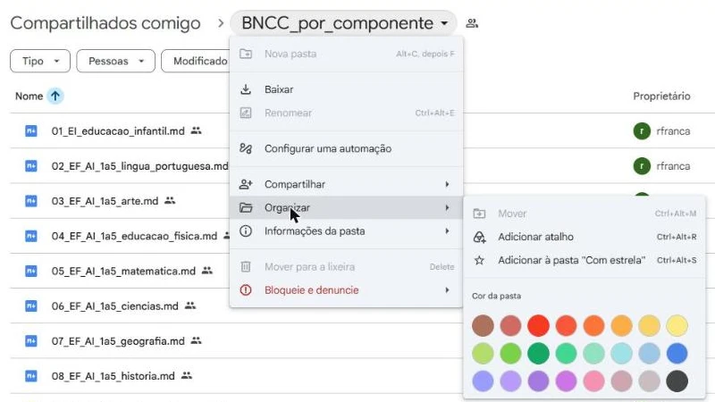
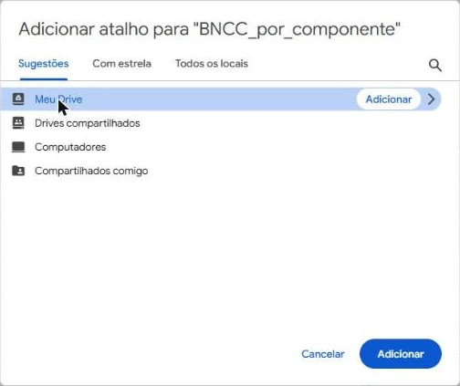
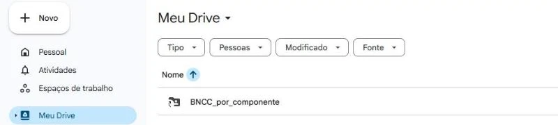
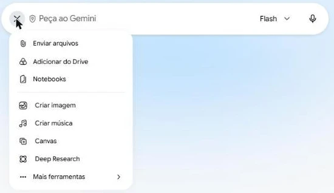
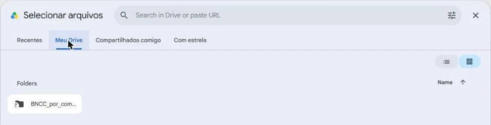
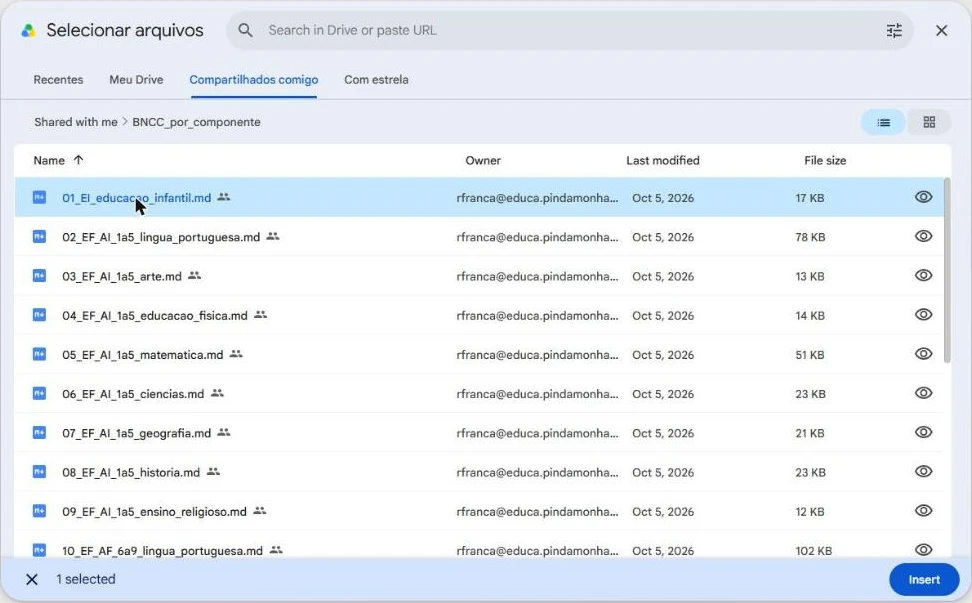
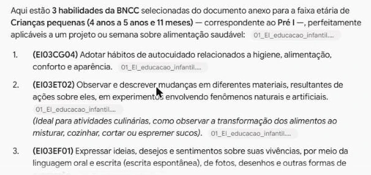

Usando a BNCC como fonte
Anexe um arquivo com as habilidades da BNCC para ter maior precisão nas respostas da IA.
Pasta com os arquivos da BNCC
Cada arquivo é um componente, com os códigos e as descrições oficiais das habilidades.
Abrir a pasta no DriveQual arquivo escolher?
A parte inicial do nome de cada arquivo indica a etapa e o componente:
EIEducação Infantil (um único arquivo com todos os campos de experiências)EF_AI_1a5Ensino Fundamental, anos iniciais (1º ao 5º ano)EF_AF_6a9Ensino Fundamental, anos finais (6º ao 9º ano)EMEnsino Médio
Exemplo: 05_EF_AI_1a5_matematica.md é Matemática do 1º ao 5º ano.
Se o pedido mistura componentes, como um projeto de Ciências e Língua Portuguesa, anexe os dois arquivos.
Passo a passo
Onde você quer guardar suas fontes da BNCC?
-
1
Abra a pasta da BNCC
Confira se está logado no Drive com a sua conta @educa, a mesma do Gemini institucional.
Abrir a pasta da BNCC -
2
Peça para adicionar um atalho
Clique na setinha ao lado do nome da pasta, no topo, e escolha Organizar › Adicionar atalho.

-
3
Escolha Meu Drive
Na janela que abre, clique em Meu Drive e depois em Adicionar.

A partir de agora, quando quiser acessar essas fontes, irá encontrá-las em sua pasta Meu Drive.

-
4
No Gemini, clique em + e depois em Adicionar do Drive
Abra o Gemini com a conta @educa e clique no + da caixa de pedido.

-
5
Localize a pasta e escolha o arquivo
Na aba Meu Drive, abra o atalho
BNCC_por_componente.
Clique no arquivo do componente e depois em Insert.
Para selecionar múltiplos arquivos, segure a tecla Ctrl enquanto clica em cada um.
-
6
No prompt, diga para usar o arquivo
Ao escrever o seu pedido, acrescente, no fim:
Comando (Prompt)Pesquise as habilidades da BNCC no arquivo anexo e confira uma por uma. Use os códigos e as descrições literais, exatamente como estão no arquivo. Não invente códigos nem resuma o texto. Se não encontrar uma habilidade adequada no arquivo, diga isso.
-
7
Verifique as habilidades
Cada trecho da resposta vem com uma etiqueta com o nome do arquivo: é sinal de que o Gemini copiou dali.

Mesmo assim, escolha duas ou três habilidades, abra o arquivo pelo atalho no seu Drive ou na pasta compartilhada e pesquise o código para verificar, por amostragem, se estão corretos.
Dica: use o atalho Ctrl + F para fazer uma busca no arquivo.
- 1
-
2
Baixe os arquivos que vai usar
Clique com o botão direito no arquivo e escolha Fazer download. Se baixar vários de uma vez, o Drive junta tudo num
.zip: clique nele com o botão direito e escolha Extrair tudo. -
3
Guarde numa pasta fácil de achar
Os arquivos vão para Downloads. Crie uma pasta BNCC em Documentos e mova-os para lá.
-
4
No Gemini, anexe o arquivo
Abra o Gemini com a conta @educa. Clique no + da caixa de pedido e escolha Enviar arquivos.
Na primeira vez, clique em Concordo no aviso sobre o uso de arquivos. Depois vá até Documentos › BNCC e abra o arquivo. Também dá para arrastar o arquivo da pasta para a caixa do Gemini.
-
5
Escreva o pedido e diga para usar o arquivo
Escreva o seu pedido e acrescente, no fim:
Comando (Prompt)Pesquise as habilidades da BNCC no arquivo anexo e confira uma por uma. Use os códigos e as descrições literais, exatamente como estão no arquivo. Não invente códigos nem resuma o texto. Se não encontrar uma habilidade adequada no arquivo, diga isso.
-
6
Confira algumas habilidades
Cada trecho da resposta vem com uma etiqueta com o nome do arquivo: é sinal de que o Gemini copiou dali.
Mesmo assim, escolha duas ou três habilidades, abra o arquivo na pasta compartilhada e procure o código com Ctrl + F. O texto tem de ser o mesmo.